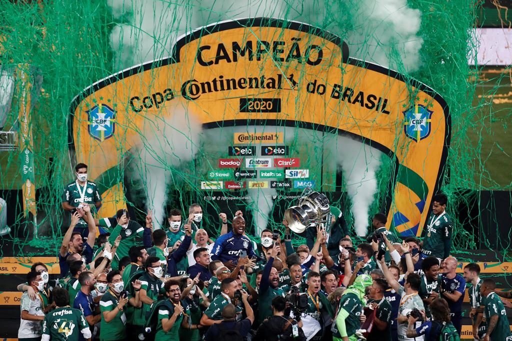

História da chegada de Abel ao clube
Abel Ferreira chegou ao Palmeiras em outubro de 2020, tornando-se o primeiro treinador estrangeiro a comandar o clube. Sua contratação foi vista como uma aposta audaciosa da diretoria, buscando uma nova abordagem tática e uma mentalidade vencedora para o time.
Primeira conquista
O primeiro título conquistado por Abel Ferreira no Palmeiras foi a Copa do Brasil de 2020. Após assumir o comando da equipe em outubro daquele ano, Abel conduziu o Palmeiras a uma campanha sólida e consistente na competição. Na final, o Palmeiras enfrentou o Grêmio e venceu ambos os jogos (1-0 e 2-0), sagrando-se campeão da Copa do Brasil. Essa conquista marcou o início de uma trajetória de sucesso para Abel Ferreira no comando do clube, demonstrando sua capacidade de liderança e sua habilidade em conduzir a equipe à vitória em competições importantes.
Abel Ferreira com o troféu da Copa do Brasil:
Imagens da comemoração do tíulo da Copa do Brasil:
Essa primeira conquista marca o ínicio de uma trajetória de um treinador vitorioso pelo Palmeiras que completa 4 anos até o momento
Conquista da Glória Eterna
Uma das maiores conquistas de Abel Ferreira com o Palmeiras foi a vitória na Copa Libertadores da América de 2020. O Palmeiras venceu o Santos na final por 1 a 0, conquistando o título continental após 21 anos.
A conquista da libertadores de 2020, contra o santos contou com a participação direta do abel no título, que colocou o Breno Lopes no final, responsável pelo gol do título
Reconhecimento de Abel Ferreira
A condução de Abel Ferreira durante a campanha da Libertadores foi amplamente elogiada. Sua abordagem tática, capacidade de motivar os jogadores e tomar decisões estratégicas foram fundamentais para o sucesso da equipe.
Histórico de Sucesso
Com um histórico de sucesso notável, incluindo a conquista da Libertadores, Abel Ferreira se tornou um dos treinadores mais respeitados no cenário do futebol sul-americano e brasileiro.
Estilo de Jogo e Tática
Abel implementou um estilo de jogo ofensivo e organizado, que foi bem recebido pela torcida e pela diretoria do Palmeiras. Sua abordagem tática levou a equipe a ter ótimos desempenhos em campo.
Agora você irá assistir a trajetória de Abel Ferreira desde sua apresentação, até conquistas de títulos, desafios enfrentados por ele durante o comando da equipe, além de algumas curiosidades, em sua passagem vitoriosa.
Esse é um artigo para mostrar um pouco da trajetória de Abel, pelo Palmeiras, além de mostrar algumas curiosidades